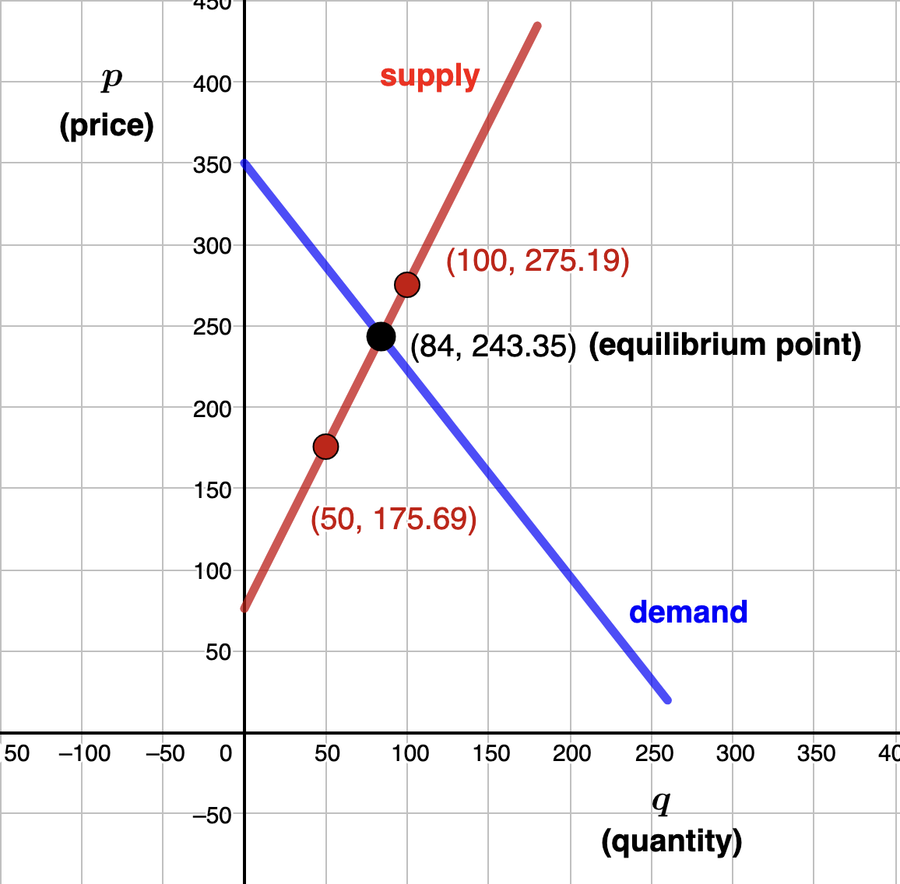

Section 1.3 Linear Models and Applicaitions
We start with a couple examples. In each example, pay attention to the distinction between the input variable and output variable. Throughout this text, you should continue to practice identifying each of these variables in context, and writing a sentence to interpret each. Notice that in each case, points on the graph of these mathematical models will have the form \((\textrm{input variable}, \textrm{output variable})\text{.}\)
- Write a formula to model the total cost, \(C\text{,}\) for \(n\) nights in the hotel. Solution.Each night you stay you get charged $159 plus an 11% tax. For \(n\) nights this means you'll pay \((159 + .11(159))n = 176.49n\text{.}\) With the $5 tip the total cost for \(n\) nights is\begin{equation*} C=176.49n+5 \end{equation*}In this context, we refer to \(n\) as the input variable and \(C\) as the output variable. So, the input variable \(n\) represents the number of nights stayed at the hotel. The output variable \(C\) represents the cost in dollars for staying at the hotel for \(n\) nights.
- How much will you pay for a 4 night stay? Solution.Evaluating at \(n=4\) gives\begin{equation*} C=176.49(4)+5=\$710.96 \end{equation*}You will pay $710.96 to stay at the hotel for 4 nights.
Example 1.3.2.
Let
- \(C\) = total charge in dollars for a ride in Jane's car
- \(d\) = distance traveled in miles
We need a model in the form \(C=md+b\text{.}\) Notice that passengers are responsible for the pickup fee of $8.75 with \(d=0\) miles traveled. So, we know the point \((0, 8.75)\) is on the line (which is the \(C\) (or vertical) intercept). We are also given that passengers pay
\begin{equation*}
\dfrac{2.25 \: \textrm{dollars}}{1 \: \textrm{mile}} = \dfrac{\Delta C}{\Delta d}
\end{equation*}
which means that 2.25 is the slope, \(m\text{.}\) The desired model is
\begin{equation*}
C = 2.25d + 8.75
\end{equation*}
In this problem, the input variable is \(d\text{,}\) which represents the distance traveled in Jane's car in miles. The output variable, \(C\text{,}\) is the total charge in dollars for riding \(d\) miles in Jane's car. Finish the problem for homework.
We will use mathematical models analyze and solve many problems in business that involve cost, revenue, and profit.
Definition 1.3.3.
A company's cost, \(C\text{,}\) represents the amount of money that the company spends on the creation or production of goods or services, often measured over a set amount of time or by the number of units produced.Definition 1.3.4.
A company's revenue, \(R\text{,}\) represents the amount of money brought in by a company's operations, often measured over a set amount of time or by the number of units sold.Note that a business's revenue is its gross income before subtracting any expenses.
Definition 1.3.5.
A company's profit, \(P\text{,}\) represents the amount of money a company has left after paying for business expenses, often measured over a set amount of time or by the number of units produced. In other words
\begin{equation*}
P = R - C
\end{equation*}
The next definition, related to cost, revenue, and profit, will be used in many examples to follow.
Definition 1.3.6.
A company's break-even point is the point at which total cost and total revenue are equal. In other words, a company's break even point occurs when
\begin{equation*}
R=C\text{,}
\end{equation*}
or equivalently, when
\begin{equation*}
P = 0\text{.}
\end{equation*}
Example 1.3.7.
- Find an equation for \(C\text{,}\) the total cost to produce \(x\) shirts. Solution.As we will discuss again later, the linear cost model will have the form\begin{equation*} C = \textrm{variable costs} + \textrm{fixed costs}. \end{equation*}Since \(x\) represents the number, or quantity, of t-shirts, the variable cost is \(3x\text{.}\) With the fixed costs given, the cost model for Tyler's company is\begin{equation*} C = 3x + 800 \end{equation*}In this context, the input variable is \(x\text{,}\) which represents the number or quantity of t-shirts Tyler's company produces. The output variable, \(C\text{,}\) is the total cost to Tyler's company when they produce \(x\) t-shirts.
- Find the cost to produce 80 t-shirts. Solution.Using the above linear model and evaluating at \(x=80\) gives\begin{equation*} C = 3(80)+800 = 1040 \end{equation*}The cost to produce 80 t-shirts is $1,040
- Find an equation for \(R\text{,}\) the total revenue from selling \(x\) shirts. Solution.As we will discuss again later, the linear revenue model will have the form\begin{equation*} R = \textrm{(price)(quantity)}. \end{equation*}So, the revenue model for Tyler's company is\begin{equation*} R = 14x \text{.} \end{equation*}In this context, the input variable is \(x\text{,}\) which represents the number or quantity of t-shirts Tyler's company produces and sells. The output variable, \(R\text{,}\) is the revenue made by Tyler's company when they produce and sell \(x\) t-shirts.
- Find the number of shirts that Tyler needs to sell to break even. Solution.We solve\begin{align*} C \amp = R \\ 3x + 800 \amp = 14x \\ 11x \amp = 800 \\ x \amp = 72.73 \end{align*}After rounding, we conclude that Tyler must sell 73 t-shirts to break-even.
Supply and demand refers to the relationship between the quantity of a commodity that producers wish to sell at various prices and the quantity that consumers wish to buy at various prices. It is the main model of price determination used in economic theory. The price of a commodity is determined by the interaction of supply and demand in a market. The resulting price is referred to as the equilibrium price and represents an agreement between producers and consumers of the good. In equilibrium the quantity of a good supplied by producers equals the quantity demanded by consumers. This, of course, is referred to as the equilibrium quantity.
Example 1.3.8.
- Using the inforamtion above, idenitfy two data points given by Freeze Frame's linear supply model. Solution.Since the linear model is given as \(p = mq + b\text{,}\) points on this line would have the form \((q,p)\text{.}\) That is, the quantity \(q\) of cameras supplied by Freeze Frame represents the input variable, giving the horizontal location of a point. The price \(p\) of each camera represents the output variable giving the vertical location of a point. Therefore, the given data can be expressed as the ordered pairs\begin{equation*} (50,175.69) \: \textrm{and} \: (100,275.19) \end{equation*}
- Find Freeze Frame's linear supply model. Solution.We need the slope \(m\) and \(p\)-intercept.\begin{equation*} m = \frac{275.19-175.69}{100-50} = 1.99 \end{equation*}This means that for each additional camera suppled, the supply price increases by $1.99To find the \(p\)-intercept we use the point-slope form of a line:\begin{align*} p - p_1 \amp = m(q - q_1) \\ p - 175.69 \amp = 1.99(q - 50) \\ p \amp = 1.99q + 76.19 \end{align*}Finally, we have determined that Freeze Frame's linear supply model is\begin{equation*} p=1.99q + 76.19 \end{equation*}
- Suppose the demand for Freeze Frame cameras is given by \(p =-1.27q+350\) where again \(p\) is price and \(q \) the quantity. Determine the equilibrium price and quantity. Solution.Setting supply equal to demand we solve\begin{equation*} 1.99q +76.19 = -1.27q + 350 \end{equation*}to get an equilibrium quantity of \(q=84\) (after roudning) and an equilibrium price of \(p=\) $243.35. That is, the market for Freeze Frame cameras will be at equilibrium when 84 cameras (the equilibrium quantity) are supplied at a price of $243.35 (the equilbrium price). So, the equilibrium point is \((84, 243.35)\)
Example 1.3.9.
- Identify two data points given in this problems. Solution.Since the linear model is given as \(d = mt + b\text{,}\) points on this line would have the form \((t,d)\text{.}\) That is, the time \(t\) in years since Quick Copy purchased the office machine represents the input variable, giving the horizontal location of a point. The value \(d\) of of the office machine represents the output variable giving the vertical location of a point. Therefore, the given data can be expressed as the ordered pairs\begin{equation*} (0,5200) \: \textrm{and} \: (8,1100) \end{equation*}
- Find the depreciation model for the office machine purchased by Quick Copy. Solution.We need the slope \(m\) and \(d\)-intercept.\begin{equation*} m = \frac{1,100-5,200}{8-0} = -512.5 \end{equation*}This means that for each additional yaer Quick Copy owns the office machine, it's value deccreases by $512.50.We are given the \(d\)-intercept \((0,5200)\) so that the desired model is\begin{equation*} d=-512.5t + 5,200 \end{equation*}
- Determine how long it will take the office machine to depreiciate to $2637.50
Simple Interest is a very common linear model, used in an example below. Let \(P=\) principal amount invested or borrowed, \(r=\) annual interest rate, \(t\) = time in years, and \(I\)= simple interest. Then the simple interest formula is
\begin{equation*}
I=Prt
\end{equation*}
Simple interest does not take into consideration any compounding. It's used to calculate interest on many CD's for a year or less. We will discuss simple interest in more detail in Subsection 5.3.1.
Example 1.3.10.
Lorrie deposits $5,000 into an account that pays simple interest at a rate of 4% per year. How much interest will she make in 18 months?
Solution.Note that we use .04 for 4% and \(t=\frac{18}{12}=\frac{3}{2}\) to convert to years.
\begin{align*}
I \amp =Prt \\
I \amp =5,000(.04)(\frac{3}{2}) \\
I \amp =$300
\end{align*}